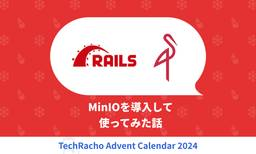
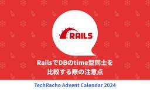
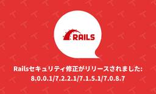

TechRacho
https://techracho.bpsinc.jp
TechRacho（テックラッチョ）は、BPSスタッフがおくるシステム開発＋αのアイデアマガジンです。Ruby on Railsネタ、EPUBの電子書籍ビューワに関連したAndroid/iOS開発ネタが多いです。社内の雰囲気がわかる記事もあるので興味をもってくださる方はぜひご覧ください。
フィード

MinIOを導入して使ってみた話 2
2
TechRacho
Rails開発でS3へのファイルアップロードやファイルダウンロードする機能を実装する際に MinIO なるものの話をよく聞くので実際に導入から使用するところまでやってみました。 そもそも MinIO って何なの？ ってことで公式サイトがあったので見てみました。 以下のリンクを見るとS3互換ストレージなるものを提供してもらえるようです。 参考: MinIO | AWS S3 Compatible Object Storage ローカル開発環境向けに各人でAWSのS3バケットを用意してRailsアプリの環境設定変更したりする作業が不要になってRailsのファイルアップロードやファイルダウンロード等の動作確認が楽になり […]The post MinIOを導入して使ってみた話 first appeared on TechRacho.
7時間前

RailsでDBのtime型同士を比較する際の注意点 2
TechRacho
Railsではデータベースのtime型を使用できます。例えば、PostgreSQLでは、時刻だけを扱うtime型を使用できます。本記事では、Railsでtime型カラム同士を比較する際に期待した判定結果にならないケースについて紹介します。 環境 Rails: 7.1.3 Ruby: 3.3.3 PostgreSQL 16 データベースのタイムゾーンはUTC、RailsのタイムゾーンはAsia/Tokyoに設定しています。 また以下のように、Railsでtime型のカラムを定義しています。 create_table(:works) do |t| t.time :time_from t.time :time_to e […]The post RailsでDBのtime型同士を比較する際の注意点 first appeared on TechRacho.
1日前
康熙部首でハマった話 2
TechRacho
とある案件で、Grover を使って生成したPDFの内容をテストするRSpecがローカル環境でのみ失敗してしまうということがありました。 テストコードは以下のような感じです。 pdf = PDF::Reader.new(io) contents = pdf.pages.first.runs.map(&:text) expect(contents).to include '〜を見る' PDF内の文字列を pdf-reader で抽出し、「〜を見る」という文字列が含まれているかどうかをテストしています。 ローカルでは失敗するのですが、なぜかCI環境では問題なく通ります。 原因を調べる まず、PDFに文字列が出 […]The post 康熙部首でハマった話 first appeared on TechRacho.
2日前
「GitLabに学ぶ 世界最先端のリモート組織のつくりかた」を読んでメンバーとしてできることを考えてみた 2
TechRacho
cellotakです。 昨年秋に発売され、しばらく話題となっていた「GitLabに学ぶ 世界最先端のリモート組織のつくりかた」という本を今更ながら読んでみました。 どちらかというと組織を作る側・マネジメントする側の立場で書かれた本ですが、メンバーとしてもかなり参考にできそうな内容が多かったため、部分的に要約しつつメンバーとしてこれは意識できそうだなと思ったポイントを織り交ぜてご紹介したいと思います。 どんな本か 創業当時からフルリモートであり、今や世界67か国、2000名以上が非同期で働いている世界最大規模のリモートワーク企業である「GitLab」ですが、リモート組織を運営するノウハウが「GitLabHandbo […]The post 「GitLabに学ぶ 世界最先端のリモート組織のつくりかた」を読んでメンバーとしてできることを考えてみた first appeared on TechRacho.
3日前
作って学ぶRustの非同期ランタイム 1
TechRacho
こんにちは。yoshiです。 TechRachoアドベントカレンダー2024ということで、クリスマスとはなんの関係もない話題をやっていこうと思います。 今回扱うのはRustの非同期ランタイムです。Rustの非同期ランタイムというと、 tokio とか async-std とか他にもありますが、今回はそれらと同じようなものを手動で作っていくことで理解して行こうという趣旨です。 非同期とは何か 実際に作り始める前に、非同期とは何か軽く説明しておくことにします。そんなのは分かっているよ、という方は次の節まで飛ばして構いません。 非同期の話をするには、まず同期の話をしておいた方が良いでしょう。コード上ではそれぞれ asy […]The post 作って学ぶRustの非同期ランタイム first appeared on TechRacho.
6日前
TOHOKU DXGATEWAY 2024に参加してきました 1
TechRacho
こんにちは、Genkiです。 アドベントカレンダーということで、久々に記事を書きます。 1. 仙台のイベントに出展してきました 12月3日に開催されたTOHOKU DX GATEWAY に印西市様と弊社の入退室管理システム「入退くん」の共同で出展してきました。 開催概要 名称 TOHOKU DX GATEWAY 2024 [自治体向けDX展示会] 日時 2024年12⽉3⽇（⽕）10：00〜17：00 会場 仙台国際センター展示棟 入場料 無料 主催 仙台市 後援 内閣府、総務省、デジタル庁、青森県、岩手県、宮城県、秋田県、山形県、福島県 TOHOKU DX GATEWAY｜自治体向けDX展示会 2. なんで仙台 […]The post TOHOKU DXGATEWAY 2024に参加してきました first appeared on TechRacho.
7日前

Railsセキュリティ修正がリリースされました: 8.0.0.1/7.2.2.1/7.1.5.1/7.0.8.7 1
TechRacho
Ruby on Rails セキュリティ修正8.0.0.1/7.0.8.7/7.1.5.1/7.2.2.1がリリースされました。Rails 8がリリースされて最初のセキュリティ修正です。 それそれのバージョンに2件のセキュリティ修正が行われました。1件はAction Pack、もう1件はTrixが対象です。 リリース情報: Ruby on Rails — Rails Versions 7.0.8.7, 7.1.5.1, 7.2.2.1, and 8.0.0.1 have been released! 英語版Changelogをまとめて見るにはGItHubのリリースタグ↓が便利です。 Release 8.0.0.1 […]The post Railsセキュリティ修正がリリースされました: 8.0.0.1/7.2.2.1/7.1.5.1/7.0.8.7 first appeared on TechRacho.
7日前

【第二弾】ノンデザイナーの私がTechRachoのバナーを作成してみた
TechRacho
今年の夏に引き続き、ノンデザイナーでフォトショ修行中の私がTechRachoのバナーを作成しました。 夏バナーを作成したときの記事はこちら。 なぜマーケティング担当者の私がデザインをやっているのか？などを解説しています。 ノンデザイナーの私がTechRachoのバナーを作成してみた 前回から成長したこと 単純にフォトショのUIに慣れてきた 前回の記事で「フォトショは感覚的に操作しづらい」とぼやいていましたが、さすがに慣れてきました。 「慣れ」を「成長」と言ってもいいかどうかは微妙ですが、個人的に「フォトショで作業をする」ことへの抵抗感が薄れてきたんです。 そもそも私は5年前までフォルダとファイルの違いも分からない […]The post 【第二弾】ノンデザイナーの私がTechRachoのバナーを作成してみた first appeared on TechRacho.
8日前
Lorca:ノードで様々な値とアバターの髪色を連動させたい:前提知識編
TechRacho
🔗目次 まえがき 作りたいもの Lorcaって? 環境構築 Flumeを使ってみる あとがき 🔗まえがき 皆さんどうもこんにちは、株式会社ECN所属のFuseです。 突然ですが皆さんはノードベースエディタ、お好きですか？ 私は大好きです。UnrealEngine5やBlenderなど、いつもお世話になっています。 そんなノードベースエディタをReactで作れるライブラリを最近見つけました。 その名はFlume、 どうやらUIを作るだけでなくロジックも仕込めるらしく、これとOSCで何か面白いアプリを作れないか？と考えていたところいい案を思いついたので早速執筆に取り掛かることにしました。 ↑目次に戻る 🔗作りたいもの […]The post Lorca:ノードで様々な値とアバターの髪色を連動させたい:前提知識編 first appeared on TechRacho.
9日前
最近の公募増資・売出（PO）一覧
TechRacho
価格決定日~受渡日 銘柄名 (コード)詳細情報 売出人 募集総額 / 時価総額 = 募集割合 幹事 信用 / 貸借 参考情報 24/12/18~24/12/27 シンクロフード(3963) 藤代 真一社長 38億円113億円33.6% 野村 貸借（売り禁） 大株主逆日歩日別終値 24/12/18~24/12/25 日産東京販売ホールディングス(8291) 損害保険ジャパン東京海上日動火災保険三井住友海上火災保険 30億円282億円10.6% みずほ 貸借（貸株注意喚起） 大株主逆日歩日別終値 24/12/17~24/12/24 寿スピリッツ(2222) とりぎんリース山陰合同銀行三井住友海上保険三菱UFJ信託銀行 […]The post 最近の公募増資・売出（PO）一覧 first appeared on TechRacho.
10日前